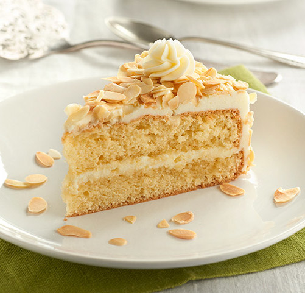
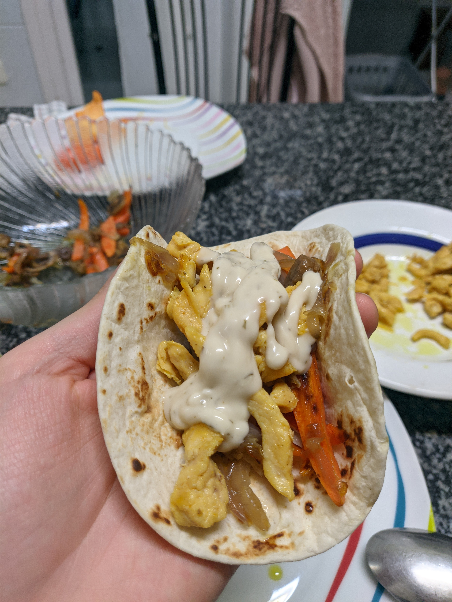
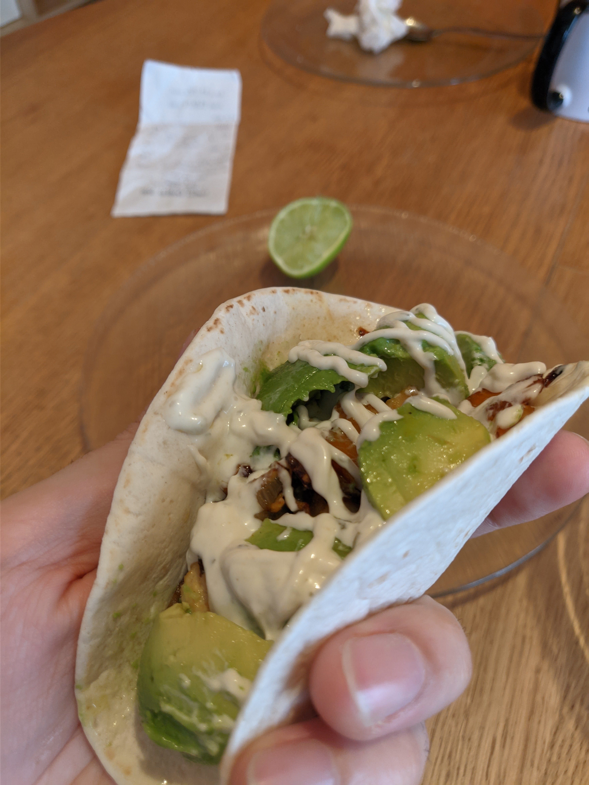
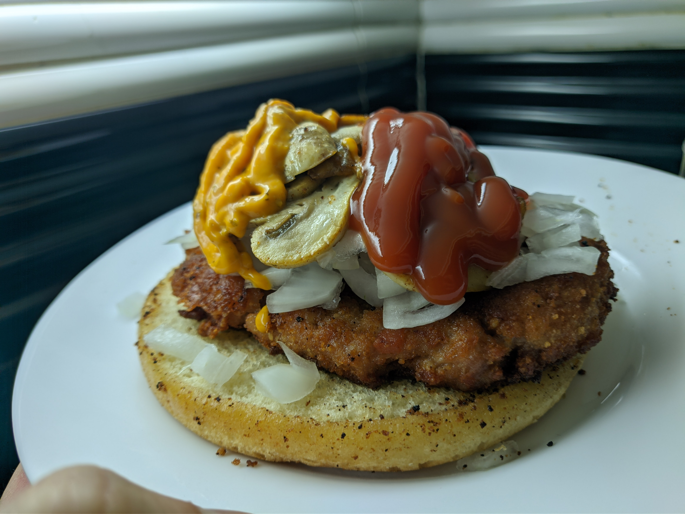
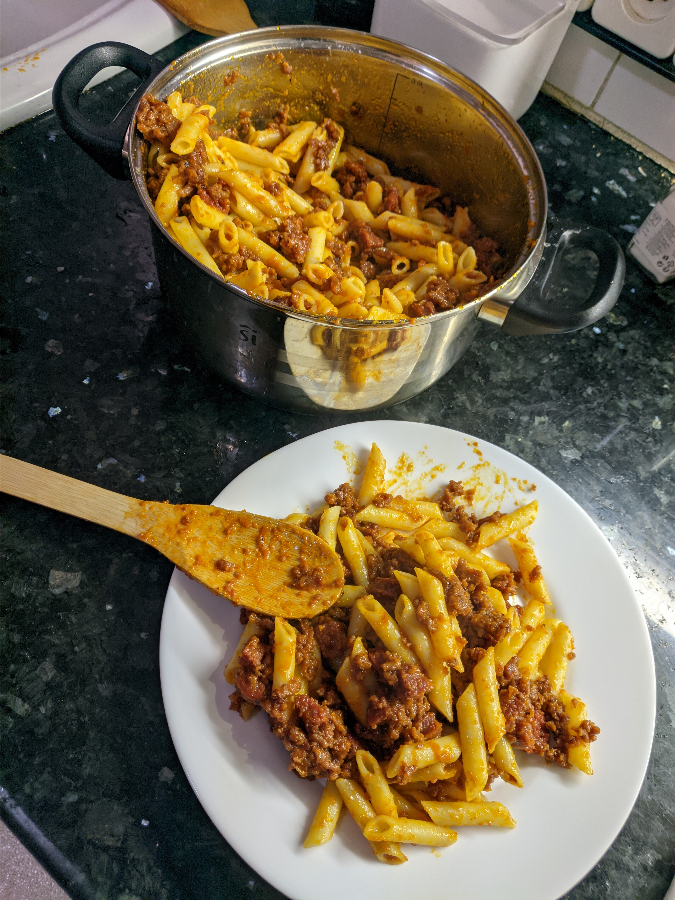
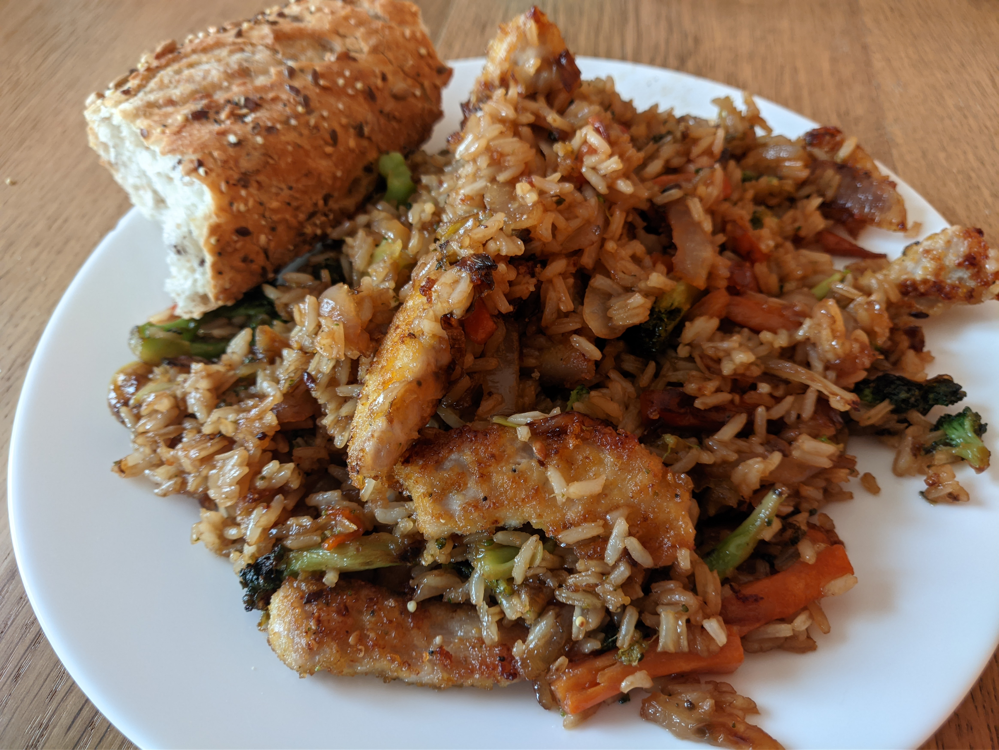
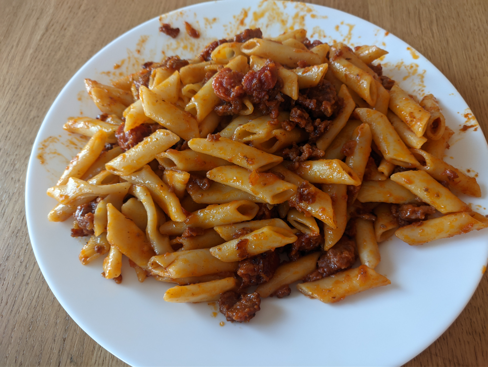
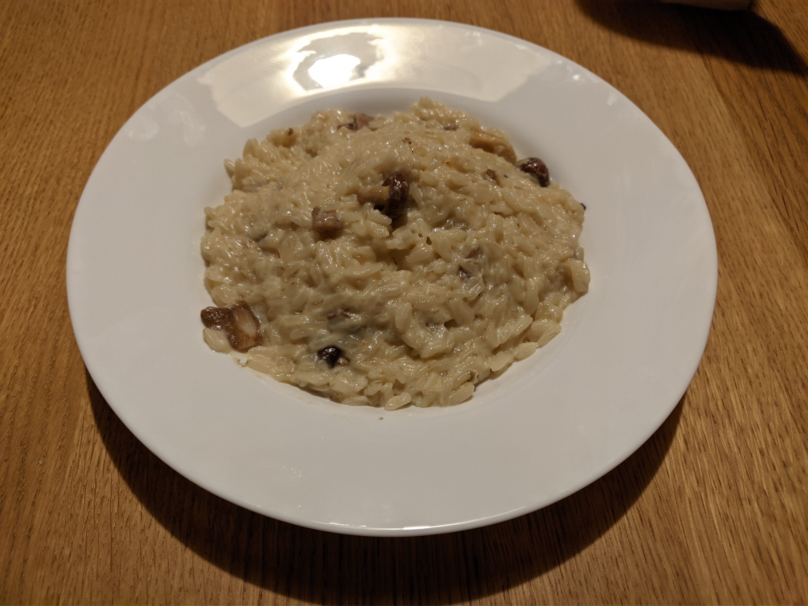
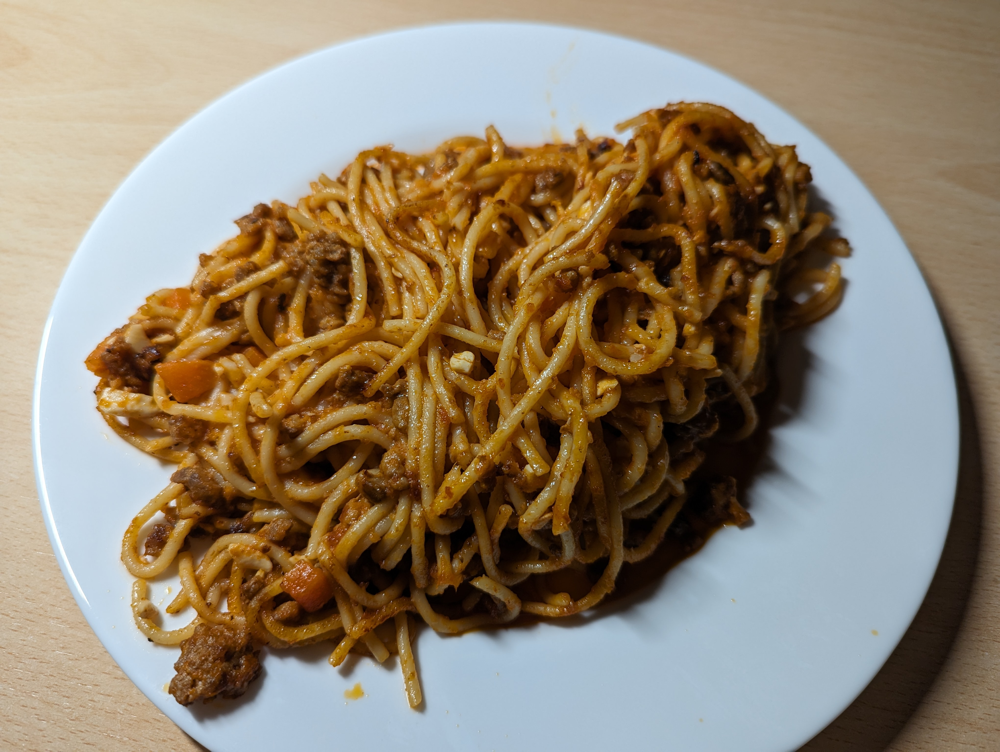
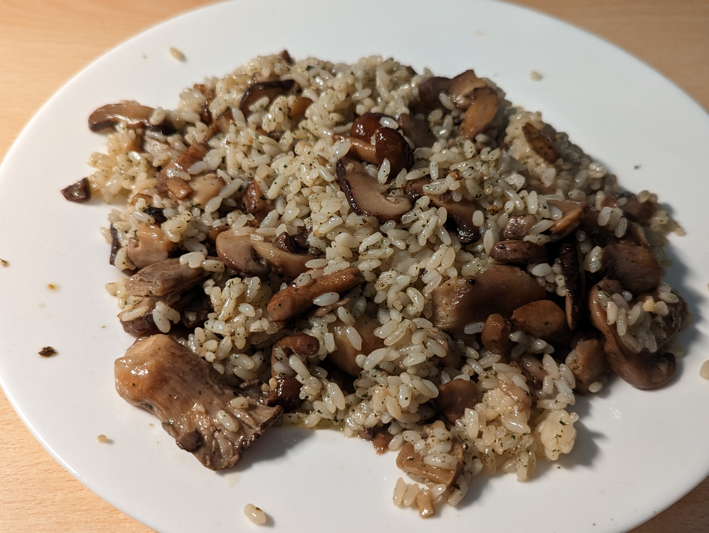

Cada vez queda menos, Cyn
No te sientas mal, también puedes verlo así:
segundos
O así:
minutos
O también...
horas
O...
días
Mientras esperas, aprovecha para leer mis respuestas:
¿Qué tarta te gusta? A mí me gusta muchísimo la tarta Sacher, solo.. para que lo sepas, por si acaso xD
Pues el día de mi cumple pedimos un coulant que estaba buenísimo... Y en la panadería del lado de casa de mis padres tenían unas Saras que estaban buenísimas (pero cerraron 😭). En mis últimos cumples en casa de mis padres han encargado este pastel. Ah, y el de oreo es espectacular. Y el coulant de pistacho también... Mira, no soy de pasteles, pero ante estos... no me puedo resistir.



¿Eres más de dulce o de salado?
Ambos. Me gustan las cosas dulces pero también la comida con sal. Diré salado porque hay muchos platos que hago (salados, de comida normal), y luego hay muchos pasteles, y como ya sabes, no soy de pasteles. Estoy consultando las fotos de mis platos y la mayoría son salados... qué hambre me está dando, si yo lo he visto ahora tú también.











Qué hambre... voy a comer. Chao!
Por cierto, tuve un pequeño problema con la ardilla...